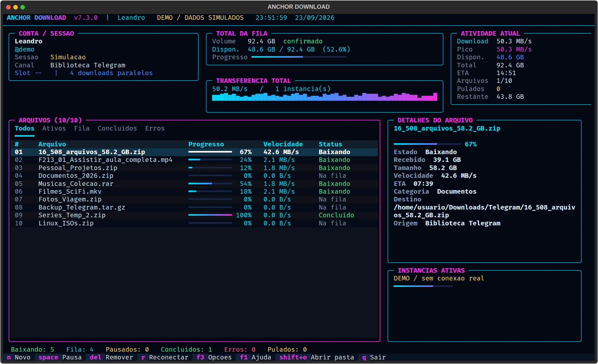

Sabe o tamanho antes de começar
Uma primeira passagem percorre só os metadados, sem reter as mensagens, e confirma o total. O progresso passa a ter uma referência real em vez de crescer às cegas.
v7.3.0 · Linux · MIT
Anchor Download baixa e organiza coleções grandes de canais e grupos do Telegram sem carregar o histórico inteiro na memória. Calcula o volume antes de começar, baixa em paralelo e retoma exatamente de onde parou.
pipx install anchor-downloader
sudo snap install anchor-downloader

anchor-downloader --demo para ver assim,
sem configurar conta nenhuma.
Uma primeira passagem percorre só os metadados, sem reter as mensagens, e confirma o total. O progresso passa a ter uma referência real em vez de crescer às cegas.
Arquivos .part são retomados depois de queda de rede,
reinício ou fechamento. Referências de mídia expiradas são renovadas
sozinhas, sem perder o parcial já baixado.
Dez ou mais janelas compartilham uma única conexão com o Telegram, coordenadas por um serviço local. O limite global evita abrir fluxos que a conta não aguentaria.
Espera automática para os limites do Telegram, inclusive o
FloodPremiumWait de contas não Premium — e a espera é
combinada entre todas as janelas, não repetida por cada uma.
Fotos, Vídeos, Músicas, Áudios, Documentos, Legendas, GIFs, Stickers e Outros. Cada destino ganha um manifesto de verificação e um relatório final em texto.
Fila limitada para canais grandes, liberação periódica de buffers no
serviço compartilhado e descriptografia nativa por cryptg,
para o Python não virar o gargalo.
privacidade
Você usa o seu próprio API ID e
API Hash de my.telegram.org.
A autenticação fica no seu computador em StringSession, com
permissão restrita ao seu usuário. Não existe servidor
intermediário — o programa fala direto com o Telegram.
Ambiente isolado, comando disponível de qualquer pasta, sem mexer no Python do sistema.
sudo apt install -y pipx
pipx install anchor-downloader
pipx ensurepath
Atualizar: pipx upgrade anchor-downloader
Atualização automática. Para baixar num HD secundário ou externo, libere o acesso uma vez.
sudo snap install anchor-downloader
sudo snap connect anchor-downloader:removable-media
O destino padrão ~/Downloads/Telegram funciona sem liberar nada.

Para desenvolver ou rodar uma versão ainda não publicada.
git clone https://github.com/LeandroDukievicz/anchor-downloader.git
cd anchor-downloader
./install.sh
Requer python3-venv.
anchor-downloaderinicia normalmente--demopainel com dados simulados--offlineabre sem conectar ao Telegram--doctorverifica a instalação sem conectar--versionmostra a versão instaladaNenhuma ação depende do mouse. Estas são as que você usa o dia inteiro — F1 abre a lista completa dentro do programa.
O modo demonstração abre o painel completo com dados simulados. Nenhuma conta, nenhuma conexão, nenhum arquivo baixado.
anchor-downloader --demo